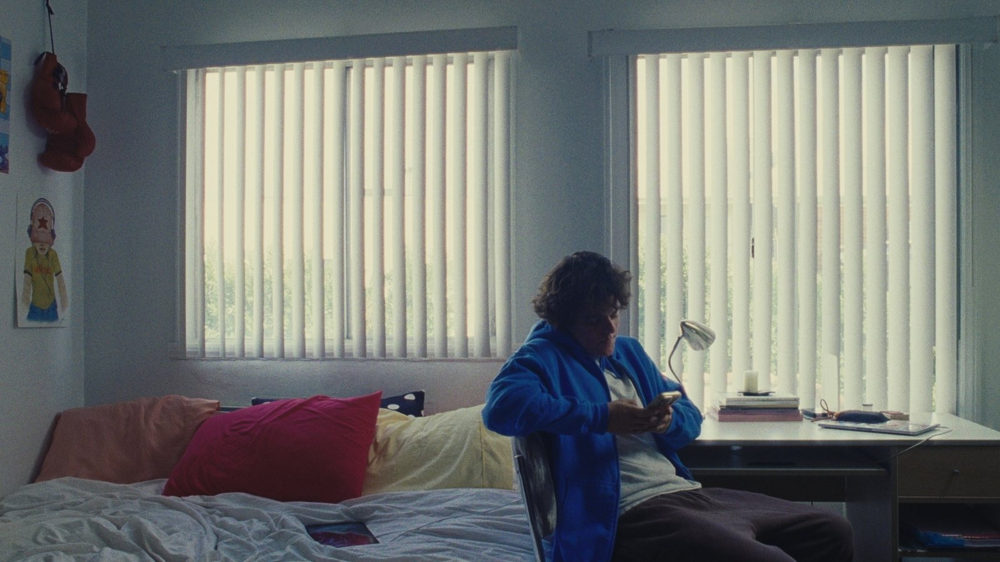
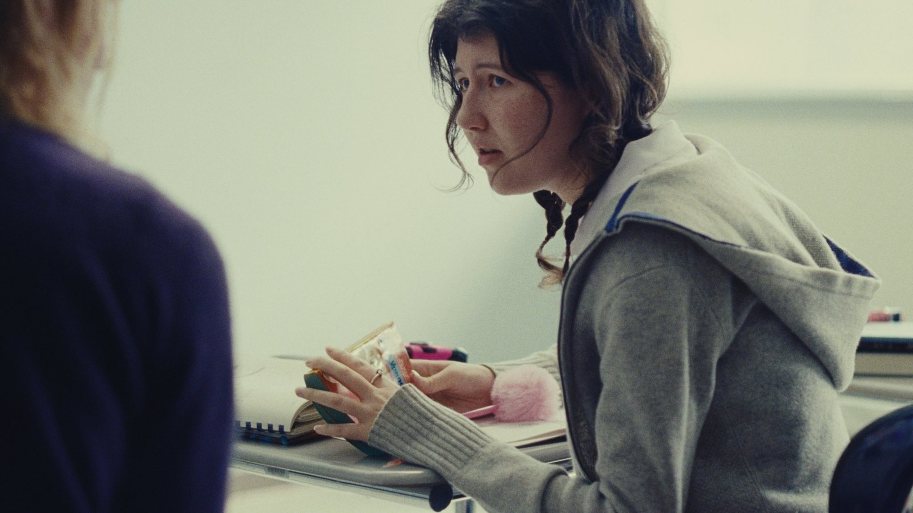
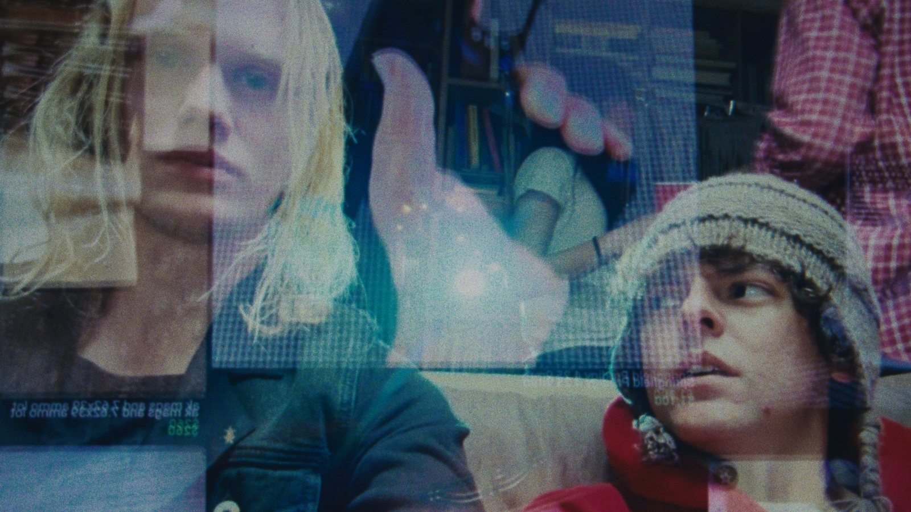
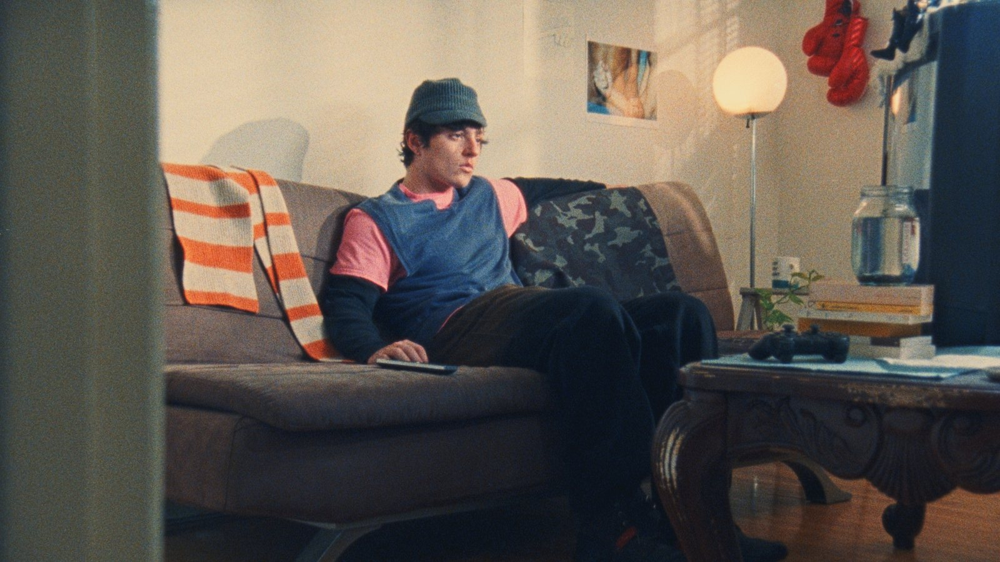

JACKIE JACKSON
Coming-of-age story about Dusty, a high school outcast who finds his first real friend in Jackie Jackson, a charismatic 17-year-old gun broker.




Coming-of-age story about Dusty, a high school outcast who finds his first real friend in Jackie Jackson, a charismatic 17-year-old gun broker.
